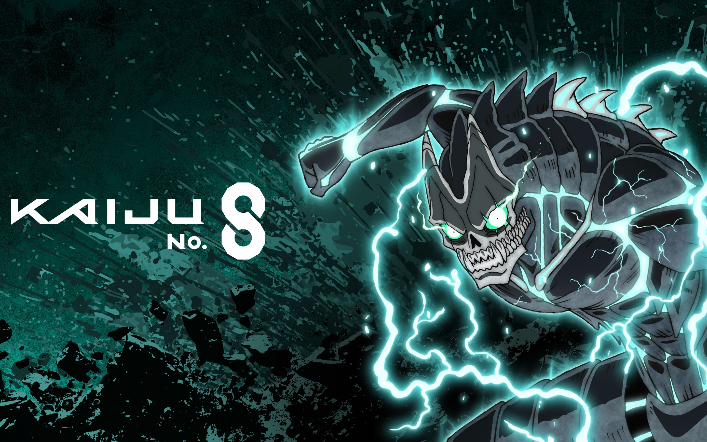

Kaiju No. 8

Kaiju No. 8 (怪獣8号, Kaijū Hachigō) é uma série de mangá japonesa escrita e ilustrada por Naoya Matsumoto [ja]. Foi serializada em julho de 2020 pela revista online Shōnen Jump+ da Shueisha, com seus capítulos coletados em 16 volumes tankōbon em setembro de 2025. A Shueisha também publicou a série digitalmente em seu serviço Manga Plus em português e vários outros idiomas.
A história gira em torno de Kafka Hibino, um homem que, após ingerir um kaiju, ganha a habilidade de se transformar em um e agora utiliza seu poder enquanto tenta se tornar parte de uma organização que elimina kaijus para cumprir uma promessa que fez a uma amiga de infância.
Uma adaptação para série de anime produzida pela Production I.G foi ao ar de abril a junho de 2024. Uma sequência foi anunciada logo depois do lançamento do último episódio da temporada. A série teve um light novel, dois mangás derivados e um videogame.
Em março de 2025, o mangá distribuiu mais de 18 milhões de cópias produzidas. A série foi elogiada por sua premissa, personagens e arte, ganhando o Next Manga Award na categoria webmangá em 2021 e sendo indicada ao Eisner Award em 2022.
Sinopse
Contexto
Kaiju No. 8 se passa em um mundo onde criaturas conhecidas como kaiju causam desastres frequentes. O Japão lidera o ranking mundial de ataques dessas criaturas, levando à criação da Força de Defesa Anti-Kaiju (日本防衛隊, Nihon bōei-tai; lit. "Força de Defesa Japonesa"). Os kaijus são categorizados por seu "nível de força", uma escala que indica sua poderosidade geral, sendo classificados como honju — os mais perigosos e fortes — e yoju — os menos ameaçadores que podem brotar dos honjus. Aqueles com níveis elevados de força ou características especiais são identificados com um número com base em sua primeira aparição e são designados como daikaiju.
Os membros da Força de Defesa utilizam trajes motorizados feitos a partir dos restos mortais dos próprios kaijus, proporcionando-lhes maior força, velocidade e resistência. Os trajes possuem uma potência total expressa em porcentagem (conhecida como "poder de combate liberado"), variando de pessoa para pessoa conforme sua habilidade, chegando a um limite máximo de 100%. Além disso, os trajes afetam a eficácia das armas dos oficiais.

Enredo
Após a destruição de sua cidade por kaijus, os amigos de infância Kafka Hibino e Mina Ashiro fazem uma promessa de ingressar juntos na Força de Defesa para combater essas criaturas. Com 27 anos, Mina alcança o cargo de capitã da Terceira Divisão da Força de Defesa, enquanto Kafka, aos 32 anos, enfrenta inúmeras reprovações nos exames, desempenhando o papel de integrante de uma equipe responsável por limpar os destroços deixados pelos kaijus após os confrontos.
Na trajetória de Kafka, ele conhece Reno Ichikawa, um jovem que trabalha meio-período na mesma empresa e aspirante a membro da Força de Defesa, reacendendo nele o desejo de também fazer parte da organização. Contudo, um parasita entra em Kafka por meio da boca, concedendo-lhe a capacidade de se transformar em um kaiju. Diante disso, Kafka escapa da vigilância da Força de Defesa, adotando o pseudônimo "Kaiju No. 8" e decide se alistar, mantendo sua forma de kaiju em segredo.
Subsequentemente, tanto Kafka quanto Reno conseguem ser aprovados no exame e se unem à Terceira Divisão, onde se juntam a Kikoru Shinomiya, uma garota prodígio matadora de kaiju que Kafka salvou durante o teste de um kaiju humanoide que a Força de Defesa nomeia "Kaiju No. 9". Kafka se depara mais uma vez com o No. 9 ao tentar eliminar Reno durante sua primeira missão com a Terceira Divisão, porém não consegue matá-lo. Tentando se esconder, Kafka surpreendido pelo vice-capitão Soshiro Hoshina. Após um breve confronto, Kafka escapa, mantendo sua cobertura. Contudo, ele é obrigado a revelar sua verdadeira natureza kaiju ao transformar-se diante da Terceira Divisão para proteger a base em Tachikawa, sob ataque do Kaiju No. 10.